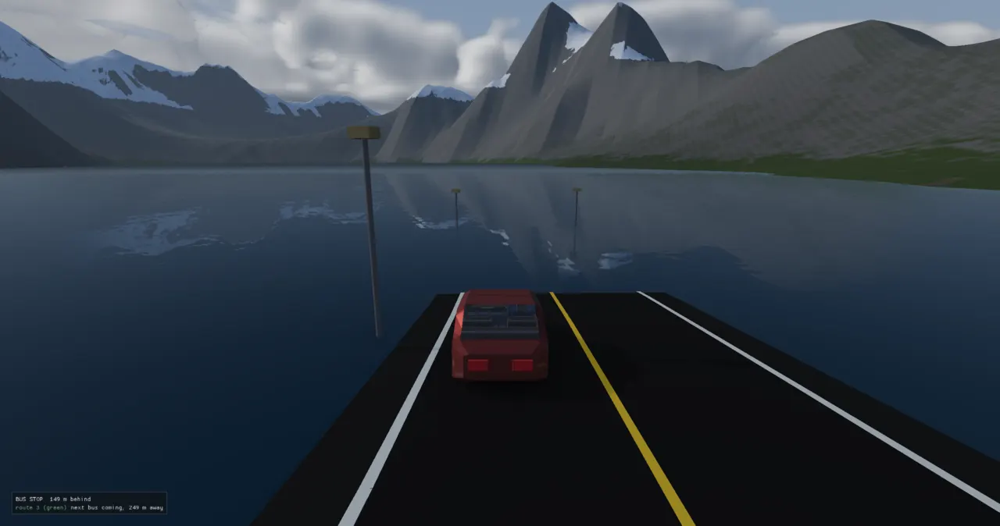
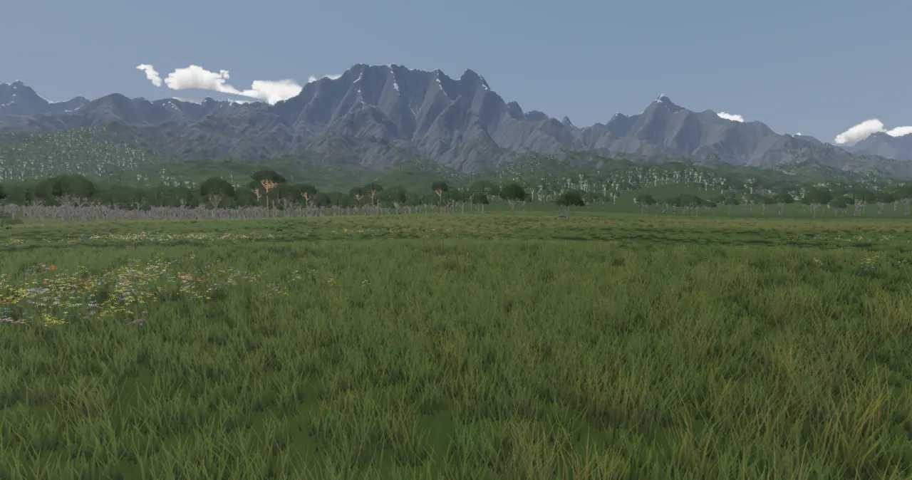
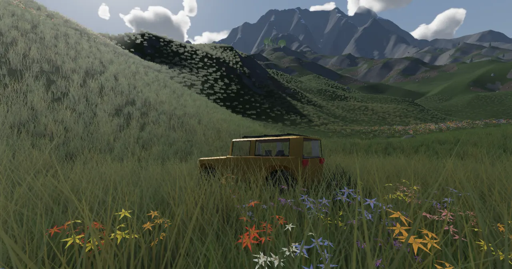
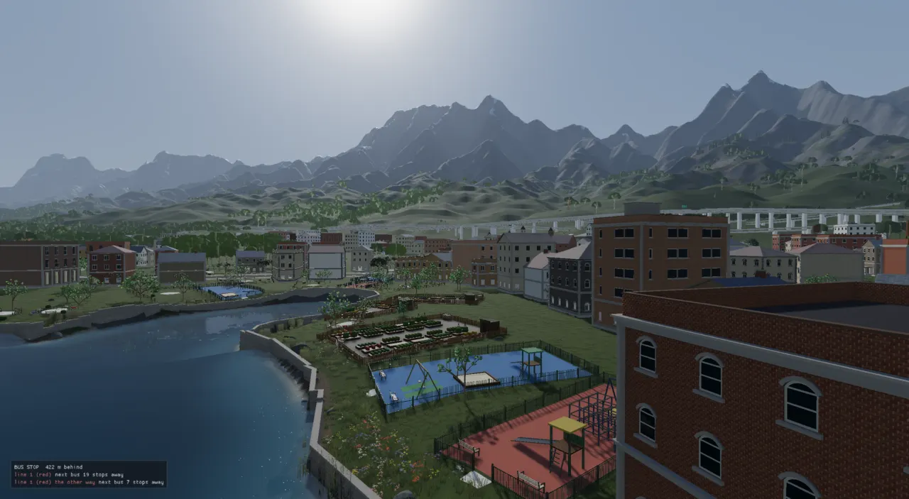
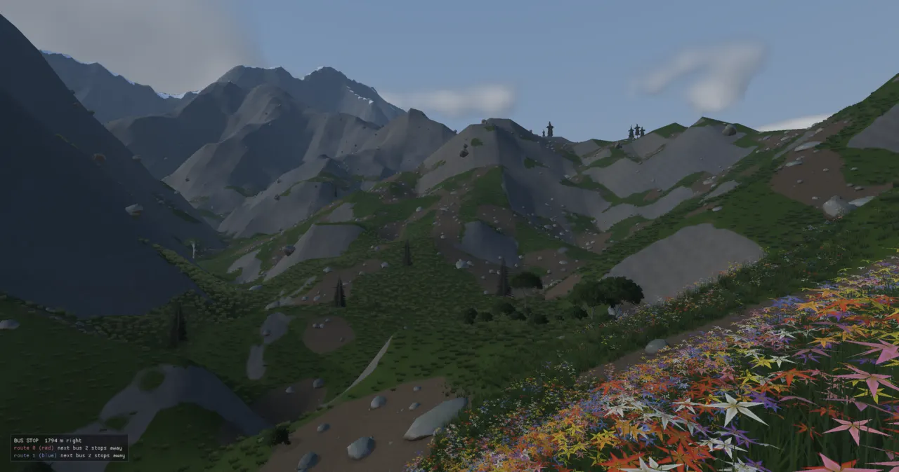

The terrain is one height function, terrainHeight(x, z), that everything asks: the mesh, the
physics, the trees, the roads. Behind it, a level's few hundred numbers are grown into mountains by a river-erosion
simulation, drained into rivers and lakes, baked into a sparse pyramid of height tiles, and drawn as a CDLOD grid
whose detail falls off with distance.
The island level is 20 km across. Its ground has to read as real mountains from a beach several kilometres away and as stones and gullies under the player's feet. It also has to stay one surface: if the car's collider, the grass, a building's pad and the drawn triangles disagree by half a metre, things float or sink. And it has to fit on a 10 GB card next to a city.
Three ideas carry the system:
From a level file to pixels. The dashed region is the weather bake: minutes of CPU work, done once per
terrain block and cached on disk as cache/terrain/weather_<key>.bin. Everything after it is
cheap enough to run at load, and the pyramid and world maps are cached too.
Seed and level JSON to the drawn ground. Blue outlines are the stages that do the real work; dashed
boxes are optional. The ground maps are computed from the weathered grid itself; the pyramid samples
terrainHeight with every carve and flatten folded in. A level with no "weather" block skips
the bake (its base is the raw formula, or the older droplet erosion); one with no "baked" CDLOD
evaluates the formula per vertex instead of reading tiles.
ADR-0027 set the shape of the whole world system: a world is a stack of fields plus recipes that read them, authored as data, regenerated identically from a seed. ADR-0055 stacked the city on top of it (suitability, then settlements, highways, streets, blocks) with one rule worth remembering: a new world system contributes fields, rules or templates, never a new pipeline stage. Rivers, roads and pads therefore don't own their own ground. They edit the one field, and the edits are layered inside a single function:
double terrainHeight(const TerrainParams& params, const Noise& noise,
double worldX, double worldZ, double flattenDilate) {
// Base relief: the pre-baked ERODED field when present (so CDLOD, collider and
// placement all get natural drainage), else the raw analytic relief.
double h = params.erodedBase ? (*params.erodedBase)(worldX, worldZ)
: terrainBaseHeight(params, noise, worldX, worldZ);
// The rivers' channels (procgen/hydrology.h): cut, never raised.
if (params.hydro) h = params.hydro->carve(worldX, worldZ, h);
// The earthwork field (procgen/earthwork.h): the ground reshaped to carry
// the road network, ADDED to the relief so its detail survives. The stamps
// below then have centimetres to absorb, not metres.
if (params.earthwork) h += (*params.earthwork)(worldX, worldZ);
// City cut/fill: grade the ground flat under roads and blocks (applied last so
// it overrides every relief layer there). Use the spatial index when the
// recipe carries one (ADR-0075 Phase 0) — same height, far fewer footprints
// tested per sample.
if (!params.flatten.empty()) {
if (params.flattenIndex && !params.flattenIndex->empty())
h = applyFlatten(*params.flattenIndex, params.flatten, worldX, worldZ, h,
flattenDilate);
else
h = applyFlatten(params.flatten, worldX, worldZ, h, flattenDilate);
}
return h;
}
The layers inside terrainHeight. The warm, dashed reader matters: the water network and the
road solve are computed on copies with flatten, earthwork and hydro cleared,
or they would measure ground already shaped by themselves (see readTerrainParams,
level_params.cpp#L225-L236).
The function is pure and deterministic for a seed, so the offline tracer, the viewer, the editor and the bake tools all agree on the ground without sharing state. It is also slow: an analytic sample walks noise octaves and a list of flatten footprints. That is why it is never what the GPU draws on a big level; the pyramid (below) samples it once.
terrainBaseHeight is the ground before any physics: domain-warped fBm (fractal noise), an optional
planar tilt, a ridged-multifractal mountain layer gated by a mask or by a range spine (a polyline the
mountains rise along), and an L-system ridge network. ADR-0105 added the island: an ellipse broken by warped noise
into bays, a peninsula lobe with its own shelf, a sector of cliff coast. The ordinary layers rise only on land; the
sea floor falls to -shelfDepth.
On a weathered level this formula is no longer the ground, it is the brief: the bake reads it to learn where
the ranges and plains are, and grows the real shape from that. ADR-0105 is also where "terrain first" was decided.
Glenn, after trying to fit a city into a river valley: "build the terrain first and then build the city around it
… We should look at a map construction before we build anything in 3d." The island is planned and judged as a 2D map
(city_plan island) before any city is laid on it.

The stream power law says a riverbed lowers at a rate proportional to the water's power: with uplift
U, drainage area A (how much land drains through a cell) and slope S,
dh/dt = U − K·Am·S. Push the crust up, let rivers cut down, run it until the two balance,
and you get what noise can't fake: a winding divide, spurs, valleys that branch toward the sea. The solver is
Braun & Willett's 2013 "FastScape" scheme, as Cordonnier et al. used it for terrain in 2016 (ADR-0125).
One iteration of streamPowerErode. Step 2 makes every cell drain: a priority flood from the
sea and the grid edge fills each hollow with a tiny rise and records each cell's receiver, the neighbour it
drains into, so the cells form a tree rooted at the outlets.
The heart of it is two loops over that tree. Area flows from donors to receivers; then incision runs the other way, receivers first, with an implicit update that is stable at any time step:
// 3. drainage area, accumulated down the tree (donors before receivers: the order reversed) std::fill(area.begin(), area.end(), cellArea); for (std::size_t o = order.size(); o-- > 0;) { const int32_t c = order[o]; if (rec[static_cast<std::size_t>(c)] >= 0) area[static_cast<std::size_t>(rec[static_cast<std::size_t>(c)])] += area[static_cast<std::size_t>(c)]; } // 4. implicit incision, receivers first: h = (h + f h_r) / (1 + f), f = K dt A^m / L (n = 1) for (const int32_t c : order) { const std::size_t i = static_cast<std::size_t>(c); if (outlet[i] || rec[i] < 0) continue; const double hr = h[static_cast<std::size_t>(rec[i])]; const double layerK = p.layers ? 1.0 + (p.layers->params().hardK - 1.0) * hard[i] : 1.0; const double f = p.K * (erodibility ? (*erodibility)[i] : 1.0) * layerK * p.dt * std::pow(area[i], p.m) / rlen[i]; h[i] = (h[i] + f * hr) / (1.0 + f); // between h and h_r: a hollow below its outlet silts up toward it }
Solving hnew = h − f·(hnew − hr) for hnew gives
the line with the comment. Because the receiver was updated first, a cell can never be cut below its outlet, which
is what lets the default dt be 50,000 "years" a step. layerK is the rock-layer hook (below); the
optional erodibility map gives soft and hard patches so the valleys don't all come out alike.
The grow doesn't start from the level's relief. weatherTerrain blurs that relief over
growBlurM (600 m on the island) into an uplift map, "where the ranges are, none of the noise",
breaks it with two scales of noise, lifts it under placed summits, and starts the grid low and rough "since a smooth
start drains straight downhill". The ADR records the dead end: a smooth, symmetric uplift grew spurs "as straight as
a fishbone". On the island the grow runs on 1024² cells (19.5 m) and took 53 s for 250 iterations when measured
(ADR-0125).
The first engine run lost the island. Stream power grew a narrow divide over wide, hilly foothills, and Glenn: "I
feel like we lose some of the shape?" ADR-0126 splits the result by scale at shapeScaleM (1.5 km): the
level keeps its broad masses and plains, the physics supplies ridges, spurs and valleys, and the grown detail fades
out on low ground so the coastal plains, where the cities stand, stay flat:
const int rad = std::max(1, static_cast<int>(w.shapeScaleM / cellM / 2.0));
const std::vector<float> lowO = blur(coarse0.h, rad), lowG = blur(coarse.h, rad);
for (std::size_t i = 0; i < coarse.h.size(); ++i) {
if (coarse0.h[i] < base0 && sea > -1e29f) continue; // the sea as it was
// the grown structure fades out on the original's LOW ground: coastal plains stay the flat
// alluvium they were (and where the cities stand), the mountains take all of it
const float up = std::clamp((lowO[i] - base0 - static_cast<float>(w.plainHeightM)) / static_cast<float>(w.reliefRampM), 0.0f, 1.0f);
const float relief = up * up * (3.0f - 2.0f * up);
// ...
const float form = lowO[i] + (coarse0.h[i] - lowO[i]) * (1.0f - relief);
const float shaped = base0 + (form - base0) * (1.0f + (massif - 1.0f) * relief);
// the summits stand on it, and the grown relief is fuller where they do (rugged high massifs,
// softer saddles)
const float lift = static_cast<float>(w.peakHeightM) * peak[i] * relief;
const float kept = shaped + lift + (coarse.h[i] - lowG[i]) * relief * (0.75f + 0.6f * peak[i]);
coarse.h[i] = static_cast<float>(coarse.h[i] + w.shapeKeep * (kept - coarse.h[i]));
if (sea > -1e29f) coarse.h[i] = std::max(coarse.h[i], sea + 0.5f); // land stays land
}
peak is ADR-0127's answer to "the heights of those mountains look fairly regular": one candidate
summit per jittered 2.2 km cell where the range is high, each a pointed cone with heights skewed low (a few big
summits over many lesser ones). The cones lift both the uplift, so rivers radiate from the summits, and the kept
envelope. Island 8's high point went from 970 m to 1296 m.

A 19.5 m grid can't hold a gully. ADR-0124 tried upsampling and running the water model at fine resolution, and
ADR-0127 found why the crags kept vanishing: the depression breach step filled or cut every closed hollow the
added noise made. "With 6 k steps, 20 k steps, and 7× harder rock the result was identical." The replacement,
after Josh's Channel's "Better Mountain Generators That Aren't Perlin Noise or Erosion" (which Glenn pointed at), is
refineGrown. Each level doubles the grid and does four things:
1/(1 + k|∇h|²) (Inigo Quilez's derivative damping) and faded out on the
plains.The island goes 1024 → 2048 → 4096 → 8192, ending at 2.44 m cells. The fourth level (ADR-0206) quadrupled the bake:
the weather grid from 67 to 268 MB, a cold bake from 4 to 16 minutes at a 5.1 GB peak. It also exposed an
artefact: on an even slope between two of the eight grid directions every cell's steepest neighbour is the same one,
and the drain cut parallel diagonal gullies. Stochastic routing fixes it: a cell drains to a downhill
neighbour drawn in proportion to the slope toward it, seeded per cell and iteration so every bake is identical. The
test measures flow lines on a slope falling 15° off the grid: 0.0° with steepest routing, 17.7° drawn. It is on only
for the 8192 level (stochasticFrom), so the coarser levels, the ground the island's cities were planned
on, stay bit for bit the same.

"I would imagine we'd have slabs or sheets of stone making ridges" (Glenn, with photos of the Flatirons, Mount Yamnuska and Banded Peak). ADR-0209 records three failures first: instanced cliff pieces "read as rocks stuck on the face"; strata stamped onto the finished ground read as nothing; weathering by the rock's angle of repose made the mountains smoother. The photos explained it: the structure that reads as rock is 50 to 500 m, the scale the mountains are grown at. So the beds went into the grow.
RockLayers is a field: beds dipping at dipDeg toward a direction that wanders over
kilometres, warped, with a share of them hard. In the stream power loop each cell's erodibility and creep are its
rock's at its current height, re-read every iteration, so cutting down through a hard bed into a soft one
speeds up. Hard beds come out as walls, buttresses and ledges; a test grows a relief with 60 m beds and finds it
1.8× steeper on hard rock. The same beds tint the rock light and dark through the macro map.
Two finer layers followed. Facets (ADR-0210, opt-in): steep rock cut into jittered Voronoi cells of 14 to 30
m, each replaced by one plane, so faces break into flat planes with real edges. ("Painted crack lines were wrong";
cracks have to be shape that catches shadow.) Rock relief (ADR-0213): below the 2.44 m grid, steep faces are
cut into 9 m Voronoi blocks, each tilted and stepped by up to 1.5 m with a sunk crack along its edges, after
Paris et al. 2020. It is applied as the grid is read (erodedForTerrain), so the 1 m tiles, colliders and
everything placed on the ground carry it. Instanced cliff blocks were tried a second time and failed again ("read as
boulders lying on a smooth slope").
Opt-in, by level. Rock layers over the whole island moved the drainage the cities stand on
(a hilly town by up to 95 m), so fromHeight/fullHeight confine them to the high ground
(300 to 550 m on the island) and the trial became its own level, island_8_rocky (ADR-0211). Even then
only 27% of inland channels kept within ~80 m. The memory notes record that Glenn's city level was later re-planned
on that ground (ADR-0214).
Before stream power, erosion was droplets (after Beyer's thesis and Sebastian Lague): simulated raindrops
that pick up and drop sediment as they run downhill. It still serves levels with "erode": true and no
"weather" block, through bakeErodedTerrain. ADR-0122 ported the Metal kernels to Vulkan
compute (erosion_gpu_vk.cpp, erosion.comp): 1024² with 500k droplets in 59 ms against
1137 ms on the CPU. It is opt-in per terrain ("erodeGpu") because GPU and CPU agree only
statistically, and switching would "quietly move their ground under their road plans".
Droplets carve drainage but hold no water, so no lakes or floodplains. ADR-0123 added the shallow-water pipe model of Mei, Decaudin & Hu (2007): every cell holds a depth of water that flows to its neighbours through virtual pipes, carrying sediment. Four kernels a step, each writing only its own cell (no atomics, deterministic). The paper's semi-Lagrangian sediment transport "grew 500 m spikes", so sediment rides the pipes instead. ADR-0124's second cut added a loose-sediment layer, breaching of shallow hollows, eight pipes instead of four (four drew every rill along the grid's axes) and coarse-to-fine:
float cap = u.capacity * max(tilt[i], u.minTilt) * length(v[i]);
// shallow sheet flow carries little: scale by depth up to a metre (Mei's model has no depth term; without
// one, the film of rain on every hillside erodes as hard as a river)
// and a THRESHOLD (ADR-0125): sheet flow a few centimetres deep does not cut at all -- on a smooth slope
// every sheet cut its own one-cell rill, parallel and grid-aligned; only water that has gathered incises
cap *= smoothstep(0.05, 0.6, d[i]);
if (b[i] < u.seaLevel) cap = 0.0;
float db;
float loose = soil[i];
if (cap > s) {
// cut the loose layer at the full rate, what is left of the step's appetite from bedrock at
// rockHardness of it
float want = u.dissolve * u.dt * (cap - s);
float fromSoil = min(want, loose);
db = -min(fromSoil + (want - fromSoil) * u.rockHardness, u.maxErodeDepth);
} else {
db = u.deposit * u.dt * (s - cap);
}
// NO SPIKES, NO PITS: a step never cuts the bed below its lowest neighbour nor piles it above its
// highest (the droplets' clamp, per step): what cannot be cut stays in the bed, what cannot be laid
// stays in the water. Without it deposits grew into 500 m spikes and cuts into 390 m pits.
float bi = b[i];
vec4 r = relief[i];
// SOIL CREEP (ADR-0125): a slow relaxation toward the neighbours' mean damps cell-scale rills and leaves
// real valleys (their curvature is gentle at this rate)
if (bi >= u.seaLevel) { float c = u.creep * (r.z - bi); bi += c; soil[i] = max(0.0, soil[i] + c); }
db = clamp(db, min(0.0, r.x - bi), max(0.0, r.y - bi));
Not on the island. The pipe model built braided channels and a lake with a delta on
river_valley (1025², 20k steps, 8.8 s), but the refine stage replaced it for the weathered levels:
island 8 sets "water": {"steps": 0, "breach": 0, "thermal": 0}, and weatherTerrain returns
before the GPU stage when there is nothing to run. The kernels stay as the tool for rt_erode
experiments.
ADR-0099 decided that rivers aren't drawn, they're found. Hydrology::build samples the ground on a
drainage grid (20 m on the island), then:
riverArea (2 km² on the island), traced to a
confluence, lake, sea or edge, Chaikin-smoothed, with width and depth from √area and a water level that only
falls downstream.terrainHeight so CDLOD, colliders and the pyramid all see it.The ground it runs on is the eroded one whenever the terrain erodes (ADR-0105: "before this, a level's rivers ignored
its own valleys"), and erodedForTerrain erases the rivers key from its cache key so the two
can't recurse. The carve is a profile around each binned river segment:
double Hydrology::carve(double x, double z, double h) const {
if (segs_.empty()) return h;
const int i = static_cast<int>((x + p_.half) / binSize_), j = static_cast<int>((z + p_.half) / binSize_);
if (i < 0 || j < 0 || i >= bins_ || j >= bins_) return h;
double out = h;
const Vec2 q(x, z);
for (int s : bin_[static_cast<std::size_t>(j) * bins_ + i]) {
const Seg& g = segs_[static_cast<std::size_t>(s)];
const Vec2 ab = g.b - g.a;
const double L2 = dot(ab, ab);
const double t = L2 > 1e-12 ? clampd(dot(q - g.a, ab) / L2, 0.0, 1.0) : 0.0;
const double d = (q - (g.a + ab * t)).length();
const double w = g.wa + (g.wb - g.wa) * t;
const double half = w * 0.5, reach = half + kBankReach;
if (d >= reach) continue;
const double level = g.la + (g.lb - g.la) * t, depth = g.da + (g.db - g.da) * t;
// a rounded channel to the water's edge, then the steep inner bank up the incision height,
// then the outer banks at bankSlope
const double incision = clampd(p_.incisionMin + p_.incisionK * w, p_.incisionMin, p_.incisionMax);
const double past = d - half, steepRun = incision / p_.bankSteep;
const double profile = d < half ? (level - depth) + depth * (d / half) * (d / half)
: level + (past < steepRun ? past * p_.bankSteep : incision + (past - steepRun) * p_.bankSlope);
double cut = std::min(h, profile);
// fade out at the reach so a deep gorge does not end in a step
const double fade = clampd((d - reach * 0.75) / (reach * 0.25), 0.0, 1.0);
cut = cut + (h - cut) * fade * fade * (3 - 2 * fade);
out = std::min(out, cut);
}
return out;
}
The incision is ADR-0099's "trench" fix. Glenn saw the water "floating above the surface… not cut into the ground like a trench". Two causes: the level was checked only at the centreline, so on a slope the downhill bank sat below the water; and the banks started flush with the water. Now each node's level is the lowest natural ground across the corridor, minus 1 + 0.05·width m (capped at 3.5), and the bank climbs that height steeply first.
The water surface is one polygon mesh: every river corridor unioned with the lakes (Clipper2) and triangulated, each vertex at its water level carrying flow direction and speed for a flow-map shader. The first surfaces were a ribbon per river, and they "folded and overlapped wherever rivers widen, bend hard, join, or meet the sea". The sea is the ocean mesh's, cell for cell, so the two never overlap.
Through a city (ADR-0104) the river is the world's: the city brief takes the same rivers
block, so the planner, the road builder's ground and the level compute one network. Streets wet for at most 180 m
become bridges, blocks stand back from corridorRings by 6 m, and quay walls line urban banks. River
width by reach (ADR-0121) is written but off: at 0.6 it re-cut a whole city's interchanges.


On the first grown ground the cover was height bands plus slope, so "the whole range read as bare dark rock"
(ADR-0128). computeTerrainMaps now reads four maps off the weathered grid once: wet (log
drainage area), scree (moderate slopes within ~35 m of ground steeper than 40°), soil (gentle and
concave ground holds it) and convex (curvature at ~15 m). Drainage area comes from the same solver, run once
with K = 0 so it routes water without touching the ground:
// drainage area: one routing pass of the stream-power solver (K = 0: the ground is not touched)
std::vector<float> area;
{
Heightmap hm = hmIn;
StreamPowerParams sp;
sp.iterations = 1;
sp.K = 0.0;
sp.uplift = 0.0;
sp.diffusion = 0.0;
sp.rescale = false;
sp.seaLevel = seaLevel;
const std::vector<float> zero(N, 0.0f);
streamPowerErode(hm, zero, sp, nullptr, &area);
}
GroundCover::at is the one answer to "what is the ground here?" for the terrain colour, the grass
density and which trees may grow. It returns weights for grass, dirt, sand, rock and snow. With maps it puts rock
where soil can't stay, dirt as scree below cliffs, meadow in the hollows, and moves the snowline down gullies and up
ridges. ADR-0118 had already broken the snowline's contour with noise lobes, aspect (lower on faces turned from the
island's sun) and tongues down the fall line ("the mountain snow line is very regular which makes it look odd").
ADR-0120 added rock colour and crag normals in mesh.frag; ADR-0207 to 0210 gave each layer a height,
so the shader bumps the normal by it and turf, soil and snow stand at their own levels with lit lips. Snow raises
the drawn ground by up to 0.6 m in terrain.vert.
One aside from ADR-0128 worth knowing: distant ground was striped with soft vertical columns, and the cause was SSAO, whose ~1 m kernel is under a pixel past a few hundred metres. Occlusion now fades out between 120 and 350 m.
The first terrain was one mesh plus concentric LOD rings. ADR-0034 listed what broke: terrain past ~99 m drawn as
sky (a fixed depth >= 0.999 test), culling misjudging one origin-centred mesh, and T-junction cracks
between rings. ADR-0035 replaced it with a grid of uniform chunks, each with a tight AABB, normals taken
analytically from the field so borders don't show. ADR-0036 then chose CDLOD (continuous distance-dependent
level of detail) over geometry clipmaps, which "discard the chunk/AABB/streaming substrate", and over discrete LOD
with skirts, which pops.
CDLOD has two parts. Selection cuts a quadtree over the square world: a node splits into four when the camera is within the finer level's range of the node's nearest point. Using the nearest point means a shared edge has one distance, so neighbours can never differ by more than one level, the invariant the morph needs:
void selectRec(float minX, float minZ, float size, int level,
const std::vector<float>& ranges, float camX, float camZ,
std::vector<LodNode>& out) {
if (level <= 0) {
out.push_back(LodNode{minX, minZ, size, 0});
return;
}
int finer = level - 1;
float d = distanceToBoxXZ(camX, camZ, minX, minZ, size);
if (d > ranges[finer]) {
out.push_back(LodNode{minX, minZ, size, level});
return;
}
float h = size * 0.5f;
selectRec(minX, minZ, h, finer, ranges, camX, camZ, out);
selectRec(minX + h, minZ, h, finer, ranges, camX, camZ, out);
selectRec(minX, minZ + h, h, finer, ranges, camX, camZ, out);
selectRec(minX + h, minZ + h, h, finer, ranges, camX, camZ, out);
}
Morphing hides the seams. Every node is the same fixed grid with an even cell count, so the coarser level's vertices are this one's even-indexed ones. Each vertex carries its morph target, the height it has on the coarser grid, and slides to it as the camera distance crosses the node's morph band. By the time the parent takes over, the child already has the parent's shape: no pop, no crack.
Left: a cut for one camera position (schematic). Nodes shrink toward the camera and no two neighbours
are more than one level apart. Right: the morph. A vertex's k is 0 at full detail and 1 at the end of
its band, where it lies exactly on the parent's surface.
The morph target rides in Vertex::tangent, which terrain didn't otherwise use, so no vertex layout
changed. Since ADR-0204 its x and z carry the coarser level's normal too, and the shader blends both:
void main() {
float dist = distance(g.cameraPosition.xyz, inPosition);
float k = clamp((dist - pc.morphStart) / max(pc.morphEnd - pc.morphStart, 1e-3),
0.0, 1.0);
vec3 worldPos = vec3(inPosition.x, mix(inPosition.y, inTangent.y, k), inPosition.z);
// SNOW HAS DEPTH (ADR-0210; Glenn: the snow "seems painted onto the surface"): on the layered ground (surface 19,
// whose u is the snow's weight) the surface rises with it -- up to 0.6 m where it lies thick -- so a snowfield
// has an edge and buries the rock under it; the player walks the ground beneath, as on real snow
if (pc.surfaceFlags.x == 19u && g.terrainNormal2.z < 0.5) worldPos.y += 0.6 * smoothstep(0.25, 0.9, inTexcoord.x);
// ...and its normal toward the coarser level's (ADR-0204), so a tile meets its parent shading as the parent does
vec3 coarseN = vec3(inTangent.x, sqrt(max(0.0, 1.0 - inTangent.x * inTangent.x - inTangent.z * inTangent.z)), inTangent.z);
outWorldPos = worldPos;
outWorldNormal = normalize(mix(normalize(inNormal), coarseN, k));
Two details from the mesher. Vertices owned by a road flatten never morph: the blind neighbour average lifted
corridor vertices back up through the asphalt at distance ("pokes throughout the entire city"). And node meshes
stream in on the job system; selectLodNodesGated splits a node only when all four children are ready,
so streaming shows coarser ground, never holes. Colliders are separate: a window of leaf patches around the player,
built from the same drawn surface.
ADR-0034 planned a bounded ~16 km world: at ±8 km single-precision floats are good to 1 to 2 mm, so no floating
origin. ADR-0095 then raised the target to 100 km after a 6 km city filled the 10 GB card, and set the rule:
GPU and RAM are bounded by what is near the camera, never by world size. For terrain that meant a baked
height pyramid: the final ground, every carve and flatten folded in, sampled once into a quadtree of square
tiles. A tile is 128 cells, 129 samples a side (the last row is the neighbour's first), stored as
uint16 quantized per tile:
struct HeightTile {
TileKey key;
float minH = 0.0f, maxH = 0.0f;
float step = 0.0f; // quantization step (m)
float error = 0.0f; // vs the level below, as drawn (0 at level 0)
bool hasChildren = false;
std::vector<uint16_t> q; // kTileSamples^2, row-major (z rows, x columns)
double at(int i, int j) const {
return static_cast<double>(minH) + static_cast<double>(q[static_cast<std::size_t>(j) * kTileSamples + i]) * step;
}
// Height at local cell coordinates (0..kTileCells), interpolated across the triangle
// split the mesher emits: (a,b,d) when u >= v, else (a,d,c) -- a the cell's min corner,
// d the max (terrain_lod.cpp, lodSurfaceHeight).
double sampleLocal(double gx, double gz) const;
};
Every level samples the same height function at its own grid points, so a parent's samples are its children's even samples and the CDLOD morph target is always the true parent. The pyramid is sparse: the four children of a tile are kept only where they'd change the drawn surface by more than the tolerance (5 cm in the engine). Plains and sea stop at coarse levels; streets, pad edges and ridges go down to 1 m cells.
if (level > 0) {
for (int cz = 0; cz < 2; ++cz)
for (int cx = 0; cx < 2; ++cx) {
const TileKey ck{level - 1, node.key.tx * 2 + cx, node.key.tz * 2 + cz};
Node kid{ck, sampleTile(spec, ck, h)};
for (int j = 0; j < kTileSamples; ++j)
for (int i = 0; i < kTileSamples; ++i) {
const double d = std::fabs(kid.samples[static_cast<std::size_t>(j) * kTileSamples + i] -
parentAtChild(node.samples, cx, cz, i, j));
err = std::max(err, static_cast<float>(d));
}
kids.push_back(std::move(kid));
}
}
HeightTile t = quantize(node.key, node.samples);
t.error = err;
bool force = false;
if (level > 0 && mustRefine) {
const double ts = spec.tileSize(level);
const double x0 = spec.originX + node.key.tx * ts, z0 = spec.originZ + node.key.tz * ts;
force = mustRefine(x0, z0, x0 + ts, z0 + ts, level);
}
t.hasChildren = level > 0 && (err > spec.tolerance || force);
The loader builds it with lodVertexHeight, the same sampler the per-vertex mesher uses (flatten
footprints dilated by 1.45 cells, road-plane corner clamp), and caches it as
cache/terrain/<key>.pyramid in the bundle format of ADR-0084. ADR-0095 puts the payoff at ~1 MB
of vertices per tile falling to ~33 KB of heights, "which pays for 0.5–1 m cells where there are streets". The
renderer then draws stored tiles only (a missing child leaves its parent drawn), with short skirts hanging from each
tile's edges, 1 m plus its error, to hide the crack where a stored leaf meets a finer neighbour.
A far tile's vertices are 16 to 64 m apart, so whatever the ground does between them is lost per vertex. ADR-0204
makes each baked vertex's normal the drawn surface's mean slope over its own cell (nine samples an edge), never
under 2 m, and morphs it to the parent's. ADR-0205 and 0208 then bake three world maps over the whole terrain,
read per pixel by mesh.frag where the mesh is coarser than a texel:
| Map | Holds | Island size | A/B switch |
|---|---|---|---|
| normal | mean slope per texel, RG8 | 8192² at 2.44 m, 128 MB, 2.3 s | RT_TERRAIN_NORMAL_MAP=0 |
| cover | grass, dirt, sand, snow weights (rock the rest) | 4096² at 4.9 m, 64 MB, 2.4 s | RT_TERRAIN_COVER_MAP=0 |
| macro | convexity, wetness, rock band tone, stains | at the cover map's texels | with the cover map |
Numbers from ADR-0205, 0208, 0209 and 0213. All three are cached beside the tiles as
cache/terrain/<key>.wmap; they are Vulkan only so far (Metal and WebGPU are owed).
Roads, blocks and pads edit the field through the last two layers of terrainHeight. ADR-0075 framed it
as a grading cascade: terrain is ground truth, roads set the grades, blocks grade to their streets, pads
flatten locally. ADR-0082 replaced fixed 8 m feathers with one smooth earthwork displacement field, a screened
Poisson solve pinned at the decks (reach 100 m), added to the relief so its detail survives. The details belong to
the roads page; one fact belongs here.
The road builder does not see the 2.44 m ground. It conforms its own copy on a 20 m grid (ADR-0221), and until 2026-10-21 the loader drew that copy as the ground over 12.6 × 17.2 km, nearly the whole island, so on Glenn's city level the refined detail never reached the screen ("the hills aren't smooth even after all this work to increase the terrain detail"). Laying the grid over the full ground everywhere made the natural detail poke through the decks (120,203 census samples, worst 20.5 m). The fix: the grid is the ground only in a corridor (nodes a deck reaches or the build changed by > 5 cm, plus 40 m), with the natural detail fading in over 60 m beyond. On the island the corridor is 8% of the nodes; 84.5% get full detail.
A 16-minute cold bake is no way to try rock settings. terrain_lab.json and
terrain_lab_layers.json (ADR-0209) run the island's whole pipeline on a 4.4 km mountain island: 37 s
cold, 9 s cached. The rock-layer variants were compared there; Glenn picked "D" (250 m beds dipping 10°, 30% hard,
hard erodibility ×0.06), which became terrain_lab_layers.json and later the island trial. Probe poses
from the memory notes: "0 350 1900 -8 0" (south), "1700 300 300 -6 270" (east),
"300 650 900 -14 0" (close).
Offline, tools/rt_erode bakes a level's terrain with any settings, and
tools/erosion_preview.py renders the result as compare, water and wetness images, no viewer needed.
| When | What changed | Why |
|---|---|---|
| 2026-06-15/17 | Fields + recipes (0027); bounded world, reverse-Z (0034); chunks (0035); CDLOD (0036) | one mesh + rings: sky-coloured far terrain, bad culling, cracks |
| 2026-07-09 | Grading cascade (0075) | decks proud of or buried in hillsides |
| 2026-08-29 | Earthwork field (0082) | fixed 8 m feathers made banks and staircases |
| 2026-09-24 | 100 km design, baked pyramid (0095); rivers (0099) | a 6 km city filled the card; water was a flat plane |
| 2026-09-25 | Terrain first: the island (0105); rivers through cities (0104) | shoehorning a city into a valley |
| 2026-09-26 | GPU erosion, pipe model (0122–0124), stream power (0125), keep the shape (0126), peaks + refine (0127), maps (0128) | noise pyramids that erosion only sharpened |
| 2026-10-19 | Normals (0204, 0205), 8192 + stochastic routing (0206), relief and maps (0207, 0208), rock (0209–0213) | "faceted" grass, "more rocky", flat far slopes |
| 2026-10-21 | Road grid only in a corridor (0221) | city levels drew the 20 m road copy |
Dates from the ADR headers where they have one, otherwise from the commit or memory notes that land them.
TerrainParams, terrainHeight, flatten footprints, the islandreadTerrainParams, erodedForTerrain (rock relief), hydrology memoTests: tests/test_terrain_lod.cpp (selection covers the world, neighbours within one level,
morph targets, baked normals), tests/test_height_pyramid.cpp (shared borders, sparse refinement, codec),
tests/test_erosion_gpu.cpp (GPU determinism, the water model, stream_power_grows_a_drained_relief_from_uplift,
stochastic_routing_follows_the_true_fall_not_the_grid, rock_layers_grow_steeper_ground_on_hard_beds,
the weather cache key), tests/test_terrain.cpp (flatten, chunks, the drawn-grid height).
Levels: island_8_weathered (the island's ground, no cities), island_8_rocky (with
rock layers and facets), terrain_lab / terrain_lab_layers, river_valley (the
hydrology and water-model test bed), river_town (a river through a 1.6 km town).
Switches: RT_BAKED_TERRAIN=0 (draw the formula, not tiles), RT_NOCACHE=1 (rebuild
every cache), RT_SYNC_CDLOD=1 (synchronous node meshes), RT_TERRAIN_NORMALS=fixed,
RT_TERRAIN_NORMAL_MAP=0, RT_TERRAIN_COVER_MAP=0, RT_TERRAIN_DETAIL=0 (no
surface relief, lips or snow depth), RT_WATER_OBJ=<path> (dump the water mesh),
RT_GROUND_LAYER_DUMP=<dir> (the layer textures). Older background:
the procgen page.